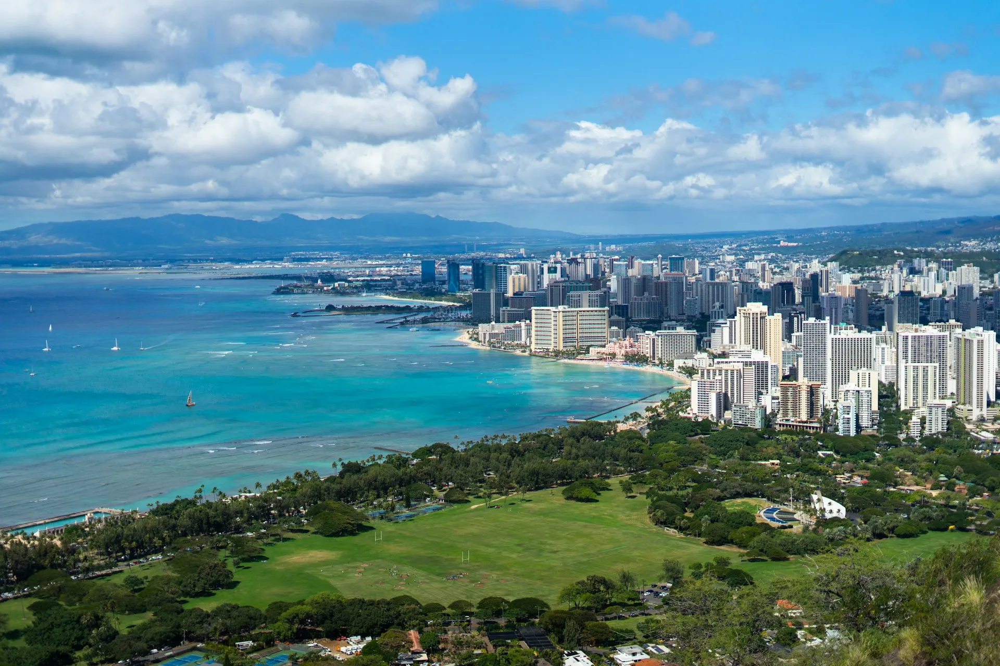
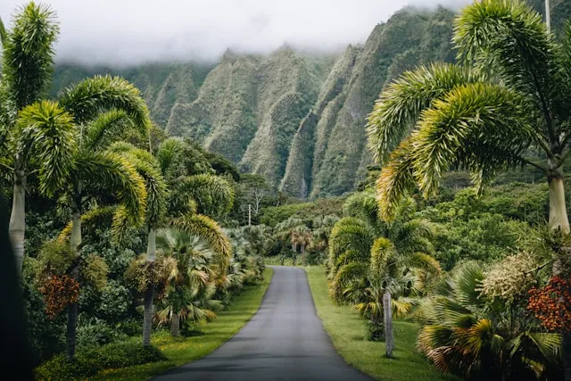
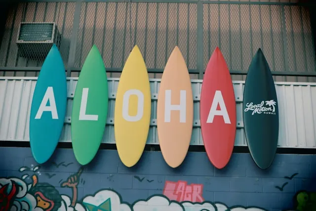
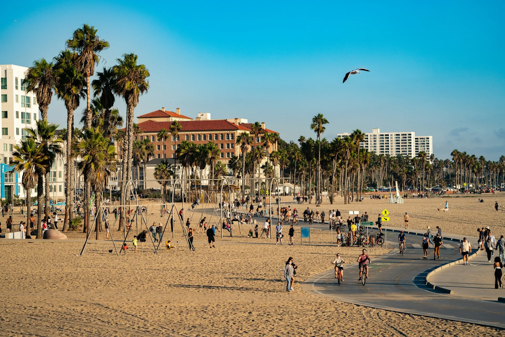
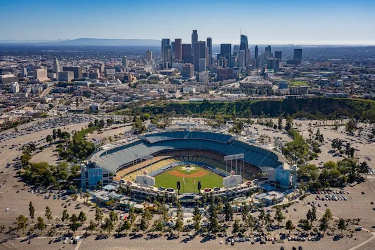
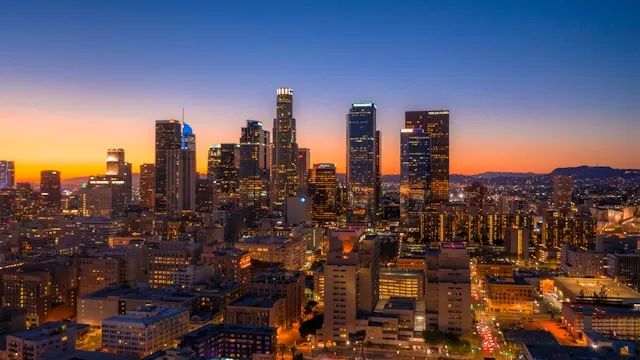
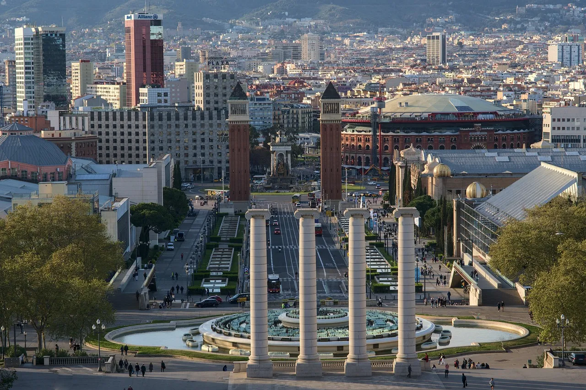
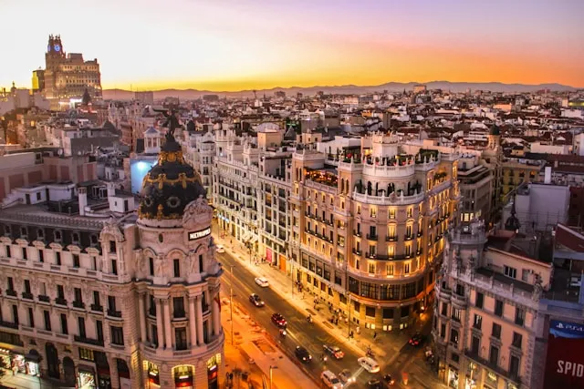
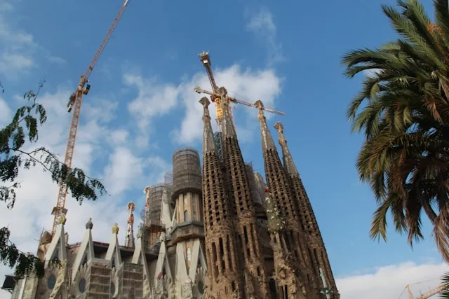

指先ひとつで、世界中の「ワクワク」へ！
今日はどこへ行ってみる？「旅するコンパス」と一緒に、世界中の素敵な観光地をめぐる冒険に出かけましょう！南国の楽園ハワイ、夢が溢れるロサンゼルス、情熱の街バルセロナ。針が指す先には、あなたを待つ最高の体験と笑顔が待っています。さあ、一歩踏み出そう！

青い海と豊かな自然に包まれた癒やしの楽園。伝統的なフラの文化や心地よい波の音、温かなオハナの精神が訪れる人々をやさしく迎えます。マリンアクティビティはもちろん、ショッピングや絶景ドライブなど、心身ともにリフレッシュできる極上リゾートです。



澄み渡る青空とエンターテインメントの活気に満ちた夢の都市。ハリウッドの映画文化やアートシーン、サンタモニカの美しいビーチなど見どころが満載です。多様なカルチャーとトレンドが交差する開放的な街並みは、訪れるたびに新たな刺激を与えてくれます。



サグラダ・ファミリアをはじめとするガウディ建築が街を彩る、情熱とアートの都。地中海の心地よい風を感じながら、賑やかなバルで絶品タパスやワインを味わう時間は格別です。歴史ある街並みと現代デザインが見事に調和した、魅力あふれる世界有数の観光地です。

